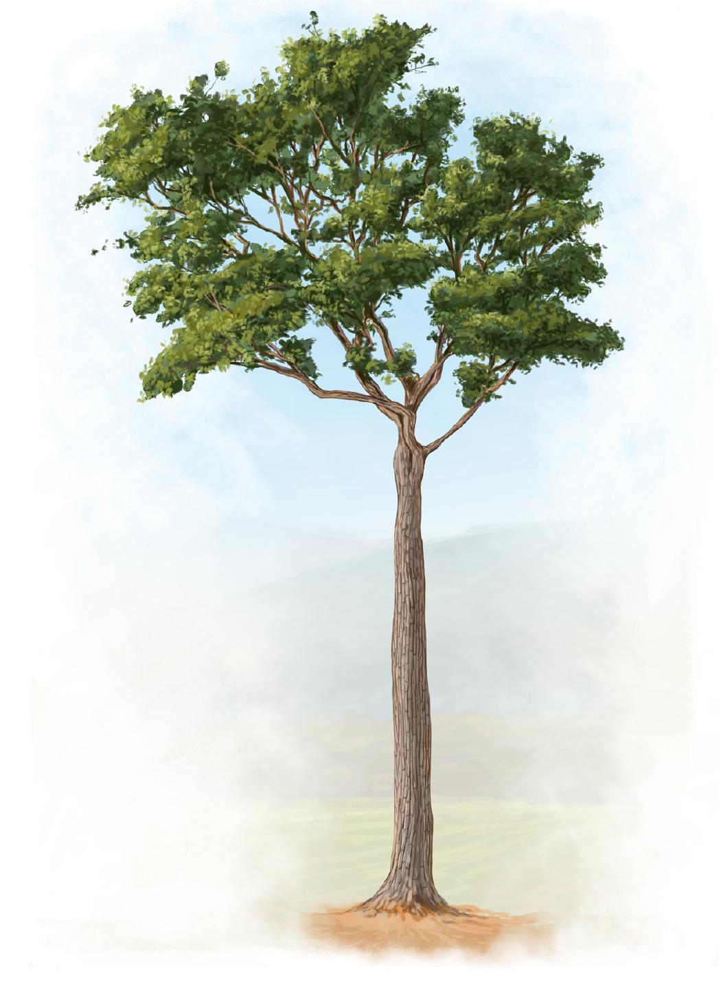

+
Carreto
Aspidosperma
polyneuron
Aspidosperma
polyneuron
Aspidosperma polyneuron, también conocido como carreto, es un árbol nativo de Sudamérica que habita el bosque seco tropical. Para adaptarse a las sequías, esta especie modifica funcionalmente la estructura de su madera mediante la formación de tejidos densos y vasos conductores estrechos. Estas características aumentan la resistencia al colapso hidráulico (como embolismos), permitiendo un transporte de agua más seguro bajo condiciones de escasez hídrica.